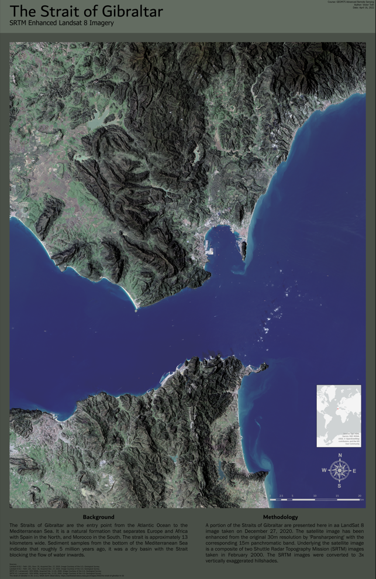
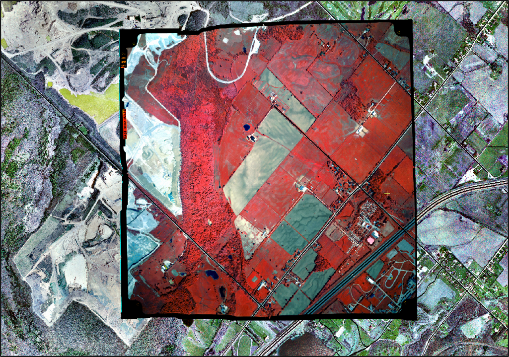
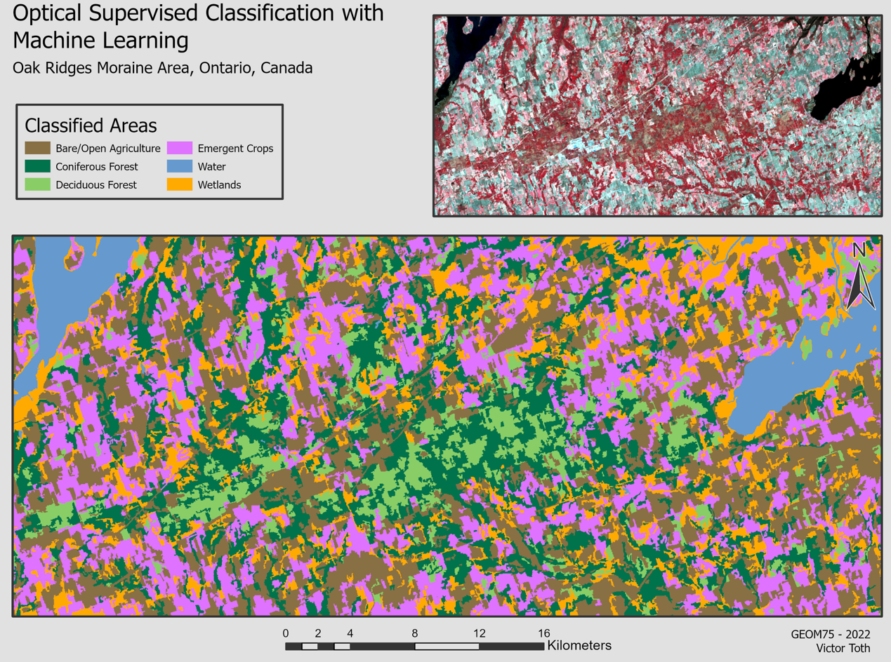

2022 - Fleming College, Advanced Remote Sensing
Final map presenting the Strait of Gibraltar incorporating Landsat 8 imagery 'true-colour bands' at 30m resolution. Panchromatic images with a resolution of 15m from Lansat 8 were also used and 'pansharpened' to enhance the colour imagery resolution. SRTM data was also used to create a vertically exaggerated hillshade image which was applied to the Landsat image.
2022 - Fleming College, Advanced Remote Sensing
Historic Colour-Infrared air photos from 1997 of the Milton, ON area orthorectified using imagery from 2002.
2022 - Fleming College, Advanced Remote Sensing
Optical image supervised classification of the Oak Ridges Morraine, ON area. Six training areas were selected for supervised classification using Catalyst software.